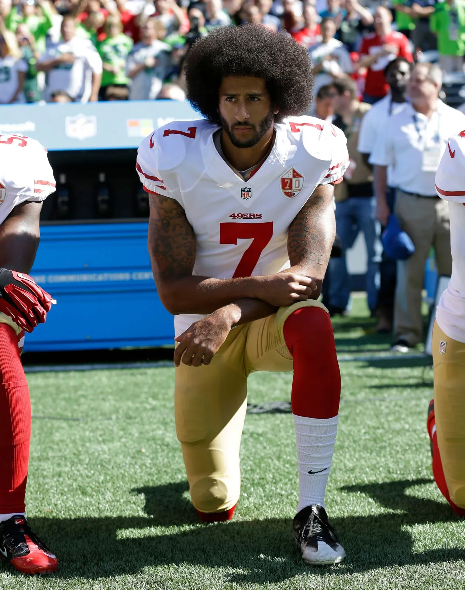
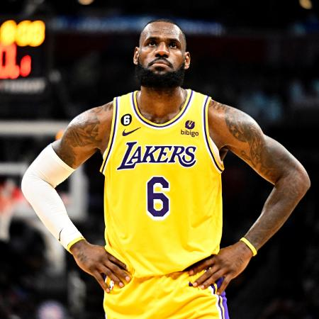
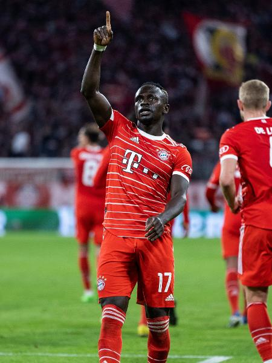

Lewis Hamilton que ganhou 7 vezes o trofeú da formula 1, também é um monstro fora do cockpit...
Colin Kaepermick que nunca ganhou o Super Bowl mas liderou o time dos 49ers para ele, ele tem uma importância enorme para o esporte entenda...
Lebron James um vencedor dentro do garrafão, já consquistou 4 NBAs e mesmo assim ajuda as pessoas...
Sadio Mané vencedor da Champions League no ano de 2019, é um monstro para a África entenda...